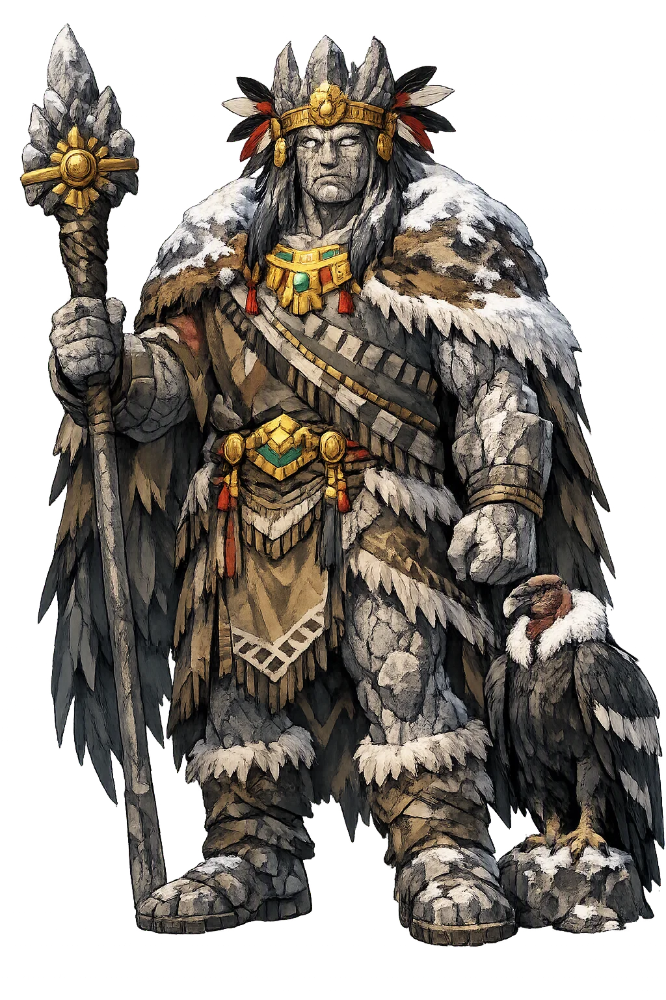
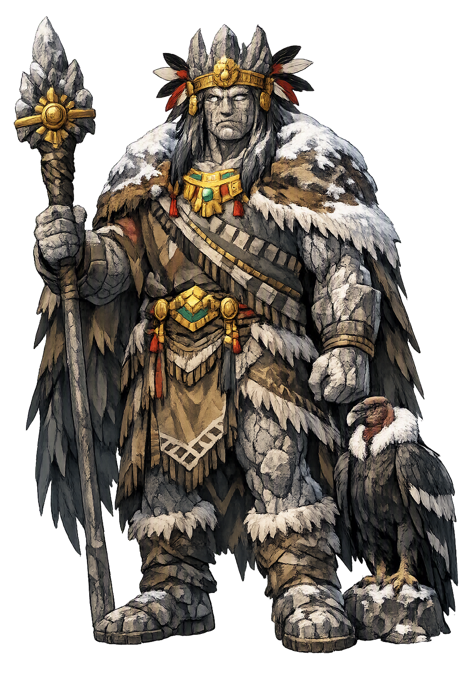

Stories of Wamani
Wamani has no epic cycle: Andean mountain religion lives in ritual, pilgrimage, and origin story rather than narrative text. What survives — from the colonial chronicles, the temple origin legends, and a living cult at Qoyllur Rit'i — reads as one long covenant between people and peak; the four 'myths' below are its chapters.
Every Andean community once knew which mountain it came from. The colonial chronicles — Cobo's Historia del Nuevo Mundo (Book 13), Sarmiento de Gamboa's Historia Indica, and the now-lost Cusco paintings they copied — record a landscape dense with paqarina, 'emergence places,' from which founding ancestors rose to establish the ayllu. The Inca told the type-tale at the greatest scale: their own forebears, the four Ayar siblings, emerged from the cave of Pacaritambo and traveled ridge by ridge until the golden rod sank at Huanacauri, the hill that chose Cusco. A wamani is this story in the singular: one peak, one people, one bloodline running from snowfield to village. The mountain is not scenery behind the genealogy; it is the first ancestor and the final grave, and the covenant — people tend the mountain, the mountain feeds the people — is the oldest contract in the Andes.
The wamani's side of the covenant is water: from the snowfields the apu sends the springs that fill the terraces, and the people's side is the offering — coca leaves and maize beer poured on stone platforms, llamas driven to high pasture, prayers spoken to the peak by name. Cobo watched the rites; modern ethnography (Flores Ochoa) records their grammar: an offering is not a purchase but a greeting, the same exchange of coca and goodwill with which one honors an elder. Neglect brings drought, hail, and sickness — the mountain, like any elder, is patient but not forever. Brian Bauer (The Sacred Landscape of the Inca) calls this reciprocity the operating system of the Inca state. The covenant makes hydrology a religion: the aquifer has a face, the watershed a will, and the annual offering the family's standing appointment with both.
Each June, tens of thousands of pilgrims climb from the Quechua-speaking nations to the glacier of Qoyllur Rit'i — 'Star Snow' — in the Cordillera Vilcanota, below the peak of Sinakara, and dance for five nights at the edge of the ice. The rite is old enough to have watched the Pleiades: Quechua farmers once timed sowing and harvest to tianquiztli's disappearance and return (Urton, At the Crossroads of the Earth and the Sky), and the shrine stands exactly where sky-calendar and snow-melt meet. The ukukus — dancers costumed as bears — climb the glacier itself and carry down blocks of star-snow to bless the fields; in 2004 Peru declared the pilgrimage national patrimony. Here the wamani's myth is not told but enacted, annually, at 4,800 metres — the rare deity whose scripture is a dance and whose cathedral melts a little every year.
When the Inca state faced crisis — an eclipse, an epidemic, an emperor's death — its answer was the capacocha: a procession to the high peaks bearing what was most precious. The chosen children were dressed as miniature lords, feasted in Cusco, given coca and maize beer, and walked with gold and silver figurines to shrines at five and six thousand metres, where they were left in the cold that would not let them decay. In 1999 Johan Reinhard's expedition on Llullaillaco found three such children — a girl of about fifteen and two younger companions — frozen, intact, wrapped in fine textiles with llama statuettes and shells; they rest today in Salta's Museum of High-Altitude Archaeology. The mountain received what the empire valued most — its children and its gold — a covenant written at an altitude where nothing human stays, and everything sacred does.
Sacred Mountain
Wamani is the Andean sacred mountain made person: the tutelary peak of a province, ancestor of its people, and keeper of the springs that descend from its snowfields. In the Inca world every region had its wamani, and the covenant between community and mountain — offerings for water, harvest, and protection — remains alive in Andean religion today.
The name joins Quechua waman, 'falcon,' to the mountain-sense recorded by the chroniclers — the falcon that watches from the peak.
The apu of a province: snowfield, spring, and ancestor in one body — the vertical axis of Andean religion.
Qoyllur Rit'i pilgrims still dance before the glacier of Sinakara each June; the covenant with the mountain has never lapsed.
Kept at the registrable form while the temple explains the restoration and the falcon-meaning the plain form conceals.
From the original script to the living URL
Wamani
The name survives in scholarly transliteration. Wamani is the standard Incan romanisation, documented in academic sources — “The falcon”. Because the spelling uses only Latin letters, the form is the same in both ASCII and Unicode.
No indigenous writing system is securely attested for individual incan names. The form shown is a modern scholarly transliteration.
wamani
The plain wamani form is identical to the Unicode restoration. Because this name is already written in Latin letters, no diacritics, stress, or script information were lost — only capitalization differs.
Wamani
The Unicode restoration does not need to recover lost marks for Wamani. Its value is canonical spelling and consistent cataloguing, not the reconstruction of erased orthography. The domain is readable as-is to both DNS and humanity.
Wamani.com
This restoration is written entirely in ASCII letters — no Punycode encoding stands between Wamani and the DNS. The domain reads identically to machines and to human eyes.
Owned, ideal, and ASCII forms of Wamani
Wamani
The full Unicode restoration. wamani.com is not in the PuniCodex collection — it is watched for release; if it drops, this temple upgrades to an owned flagship.
How Wamani was spoken
How Wamani is preserved in writing
No indigenous writing system is securely attested for individual incan names. The form shown is a modern scholarly transliteration.
Contribute scholarly provenance →The wamani corrects a flatland habit of mind. Lowland cosmologies spread horizontally — a tree, a river, a road; the Andes think vertically, in the thousand metres between maize and snow, and the mountain concentrates the whole journey in one body: spring at its foot, pasture above, ice at the crown, ancestors in its caves. To say 'the mountain is my grandfather' is not metaphor but hydrology with a face: the meltwater that feeds the terrace is his care, the drought his displeasure, and the offering the courtesy owed an elder. The modern world is relearning this grammar late — that a watershed is a relationship, that aquifers and glaciers keep accounts — and the wamani, whose covenant has been running since before Cusco, waits with the patience of stone for the lesson to land.
Enter Extended Lore